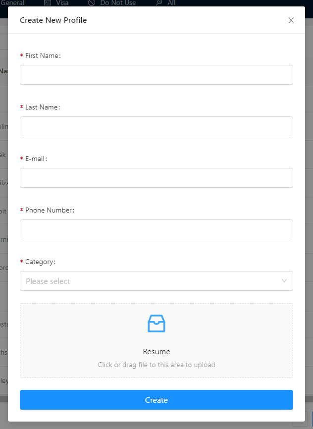

Admin-side Guide
*If you're looking for a guide for developers, check out the Technical Guide.
Home Page
Upon navigating to the Teambldr website, you will see the following view:
You can look through the several core features of TeamBldr and navigate to the login page by clicking the "Log in" button.
Login Page
Note that the credentials are case-sensitive

Admin Dashboard
Most of the functionalities and navigations will be in the Admin Dashboard. There are several components embedded as a sub-section in this component, which will be broken down to the Search Bar and the Sidebar components. Below is the image overview of the admin dashboard:

Search Bar
There is a search bar for the candidates dashboard:
There is a tooltip denoted by the
?next to the search bar that further elaborates the inclusion of the search, which include:
MPC Candidate Name Candidate Position Candidate Location Profile Completion (Complete or Incomplete) Candidate Status (Active, Inactive, or Unavailable)
The Reset button will reset the current search query and return all candidates for that specific section.
Sidebar
The sidebar consists of the following list of tabs:
Tab Description Candidates Table with all candidates with categorization Projects Table with all projects with categorization Notes Table with all notes for candidates Interviews List of all requested and scheduled interviews Hires List of all pending/completed hires Log Out Button to prompt log out
Candidates
The
Candidatestab contains a table that displays all the candidates in their own category. The categories are defined as follows:
Category Description Top Top-line candidates Industry Candidates with experience in the construction/infrastructure industry General Majority of candidates that end up in the application Visa Candidates that are on visa or require sponsorship Do Not Use (DNU) Candidates that should not be used (based on red flags) The candidate table will render the candidates in the selected category-tab.
Additionally, you can interact with each candidates in the table; you can leave notes for a candidate, view their profile, edit their information, or delete them.
For the full list of candidate interactivity, see the Candidates section
Projects
The
Projectstab contains a table that displays all the projects among its categories:
The categories are defined as follows:
Category Description Active Projects that we are actively working with Inactive Projects that we are not actively working with Demo Projects pending demo for TeamBldr

Detailed information about the projects can be found in the Project section.
Notes
The
Notestab contains a table that displays all the notes written for the candidates within the application, in the descending order of creation.Detailed information about notes can be found in the Notes section.
Interviews
The
Interviewstab is divided into two sections:
Requested: List of all interviews requested by the client
You can click the "Confirm Interview" button to select the interview time and confirm the interview for both the candidate and the client.

Scheduled: List of all interviews shceduled and confirmed
You can also select the
Pasttab to see the previously scheduled interviews.

Hires
The
Hiretab contains a table that displays all hired candidates.
You can click the
View Detailsbutton to see additional information about the hire:


Log Out
The
Log Outtab exits your current session:
Candidates
Candidates are one of the quinessential entities within the application. This section will break down all possible interactions with candidates.
Creation
Candidates are created in two different ways:
- Candidate-side application
- Admin-side creation
Candidate-side application is when the candidates themselves provide the information necessary to create their own candidate object within TeamBldr. The URL for this type of creation can be found here.
As of the current version of this documentation, candidates are directed to the creation page automatically when the Business Analysts qualify the candidates on Workable.
Admin-side creation is when an administrator within the application clicks the
New Profilebutton at the bottom left of the candidate dashboard. Doing so will prompt the admin to fill out a few fields:
The completion of either applications will register that candidate to be used throughout the website.
Edit Page
In the Candidates section of the sidebar, you can view individual rows of candidates, each also accompanied by the
Editbutton to the right of the table:
Clicking the button will navigate you to the candidate's edit page:


User Information
The above image is the
User Informationsection. This page holds several fields that are specific to the candidate:
Field Description First Name First name of the candidate Last Name Last name of the candidate Email of the candidate Phone Number Phone number of the candidate City/State The "current" city and state candidate is located in Work Authorization Candidate's work authorization status Willing to Relocate Candidate's willingness to relocate Category Candidate's Category Status Candidate's status, whether they're active or not All of these fields become editable once you click the
Editbutton at the top right.
Profile Information
The next tab over, you have the
Profileedit page:
Field Description Desired Pay Pay rate of the candidate, set as a range Skills* List of candidate's skills MPC The summary of the candidate's skills/experiences Certifications* List of candidate's certifications Years of Experience Candidate's numerical years of experience Position Type Candidate's type of position Position Candidate's title Red Flags Candidate's red flags indicating one's potential inability to be placed Resume** Candidate's attached resume *Skills and certifications can be filled out as a comma-separated list (e.g skill1,skill2).
**Uploading a new resume for the candidate will replace the candidate's current resume.
Work Experience
The
Work Experiencetab contains the list of candidate's work experiences:
For each listed experience, you will find:
Field Description Company Name of the company Title Candidate's title at the company Description Candidate's list of work experience description Start Date/End Date Start and end date at the company City/State City and state of the company Upon clicking the
Editbutton, you will see the option to:
Remove any work experience
Add additional work experiences

Candidate-Projects
Similar to the Work Experience, project tab contains any projects the candidate might have done or contributed to:
The fields are very similar to a work experience:
Field Description Company Name of the company (if any) Role Candidate's role for the project Description Candidate's list of project descriptions Start Date/End Date Start and end date of the project City City in which the project took place
Education
The education tab contains any and all education for the candidate:
The fields are as follows:
Field Description Institution Name of the institution Major Candidate's major at the institution Degree Degree attained at the institution Start Date/End Date Candidate's start and end date at the institution
Similar to the work experience and the projects, pressing the
Editbutton allows the admin toaddadditional education fields orremovethem.
Notes
The notes tab contains all the notes left about the selected candidate:
The display table has the following fields:
Field Description Author Author of the note (admin) Description Candidate's major at the institution Action Degree attained at the institution Date Created Candidate's start and end date at the institution

Clicking the
Editbutton for a note will prompt the following pop-up:
In this modal, you can edit the description and the action of the note. Note that the
Actionsection is a mini-picker, meaning multiple actions can be chosen for one note.There are following options available for the Actions:
Field Description Inbound Call Call that came from the candidate Outbound Call Call being made to the candidate Left VM Leaving voice mail for candidate Phone Screen Action noted after a phone screen Text Message Text message sent to the candidate MPC Action of presenting the candidate to a client Interview Noting the occurrence of an interview Email sent to the candidate

In addition, clicking the
New Notebutton will open a slider with the same fields in order to create a new note for the selected candidate:

Assigned Projects
The
Assigned Projectstab contains all the projects that the candidate is assigned to:Notice the format:
Project-Stage.Upon clicking the
Editbutton, you will be able to view the following display:Notice that this is a mini-picker field, meaning all the projects within the application can be assigned to the candidate.
Questions
The questions section contains various questions relevant to the candidate's prior experience, availability, and more:
The fields are as follows:

- What position are you interested in?
- Which projects do you have experience with?
- Which of the following company types do you have experience working with?
- How soon are you available to start working?
- Are you still in the job market?
- Do you have other opportunities or job offers you are considering?
- Date answered
Pressing the
Send Questions to Candidatesends an email to the candidate in the following template:

The candidate will view the following page once he/she clicks
Get Started:
Logs
The logs section lists all the activities involving the candidate:
The columns are as follows:
Field Description Title Action type of the log Content Description of the log, stating the author of the action and the recipient Time & Date Timestamp of when the event was logged
Profile
The last tab in the candidate edit page renders the candidate's profile formatted by TeamBldr:
This profile has information that accumulates all of the candidate's information into a single page.

Projects
Project is the other main entity within the application. It is a client-side entity that candidates can be associated with.
From the
Projectssection in the sidebar, pressingDashboardwill take you to the client's view of the application. Please see the Client-side Guide for more information about the client-side view.Clicking the
Editwill take your to the project edit page:

Candidates
The default tab will be the
Candidatestab, which handles the candidate-projectAssociationwithin the application. Because this is a very detailed component within the project edit, there will be a separate section dedicated to Association.
Project Information
The
Project Informationtab will display the basic information about the project:The available fields for a project consist of:
Field Description Client Name Name of the client Project Name Name of the project under the client City City where the project takes place State State where the project takes place Qualifier Qualifier for the project Company Type Type of company Project Type Type of project Website Website of the project Category Category of the project
There are different values for the
Company Type,Project Type, andCategory:
Company Types:
- General Contractor
- Joint Venture
- Design
- Owner
- Sub-Contractor
Project Types:
- Light Rail
- HighWay
- Bridge
- Water
- Airport
- Stadium
- Building
- High Speed
- Tunnels & Underground
- Other
Selecting
Otherwill prompt a text field to input the project type value.
Category:
The categories are as defined in the Project Sidebar section.
Point of Contact
This sections contains the basic information about the main point of contact designated for this project:
The fields are:
- First Name
- Last Name
Orders
This section includes any orders created under the project:
At the right-side of the table, there is an
Editbutton to edit details about that order:Clicking the edit will allow the admin to edit details about the order:
Details about the orders can be found in the Client-side Orders section

Logs
Similar to the Candidate Logs, the project logs section has all the activities related to the project:
Project Dashboard
The blue
Project Name Dashboardbutton leads to the client-side of the application. Details about this portion of the application can be found in the Client-side Section.
Association
This section covers the candidate-project association as mentioned by the initial Projects Section. This is where candidates can be added to a specific project or order, for the clients to be able to see whose candidates have been associated. Here is the page again as a refresher:
The top table represents the list of candidates, grouped by the candidate's categories. The categories are the criteria defined in the Candidates section.
The fields displayed for each candidates are:
Field Description First Name First name of the candidate Last Name Last name of the candidate Position Position of the candidate Relocation Areas where the candidate is willing to relocate
General is the default candidate category that loads upon navigating to this page.
Notice the open checkbox for each of the candidates. Upon clicking the checkbox, the down
varrow becomes enabled:
This indicates that the selected candidates can be added to the current project.
Upon clicking the
vbutton, the candidates will be moved to the bottom table, and theSave Changesbutton becomes available.Once you click the button, the candidates will be associated and will stay in the bottom table. This indicates that the candidates have been successfully associated to the project:
You'll notice from the above image that after a successful association, several buttons and fields are generated per candidate row. The new fields are:
Field Description Date Added Date in which the candidate was associated to the project Stage The current stage in which the candidate is in within the interview pipeline. Set to "Pending" by default Work Experience Displays candidate's work experience status, to indicate whether or not their profiles will seem complete or sparse Note the
?Tooltip available next to theWork Experiencecolumn. Feel free to hover over the tooltip to view more detailed information about the purpose of the field.For each candidate associated, 3 action button will also be generated:
Field Description Edit Displays a pop-up that allows the admin to set candidate's position and pay rate Manage Profile Allows the admin to unlock the candidate's profile in advance Reset Date Added Restarts the 48-hour rule for the candidate

For more information about some of these fields and the next steps in the association process, please check out the client-side documentation.
Lastly, at the bottom of the page, you might notice the different tabs:
Each of the tabs (with the exception of
General) correspond to an order that has been created for the client. Please view the Orders section for more information about the details of what constitues an order.When switching to any of the orders tab, one additional category becomes available in the drop down:
Recommended.
The
Recommendedcategory loads candidates whose profile matches the details of the selected order. Notice from the above image that the position matches the order selected and is accompanied by a match score. This is a rough measure of how well the candidate would fit with this order.For a detailed explanation of what criteria go into creating this match, please view the Matching Algorithm section.